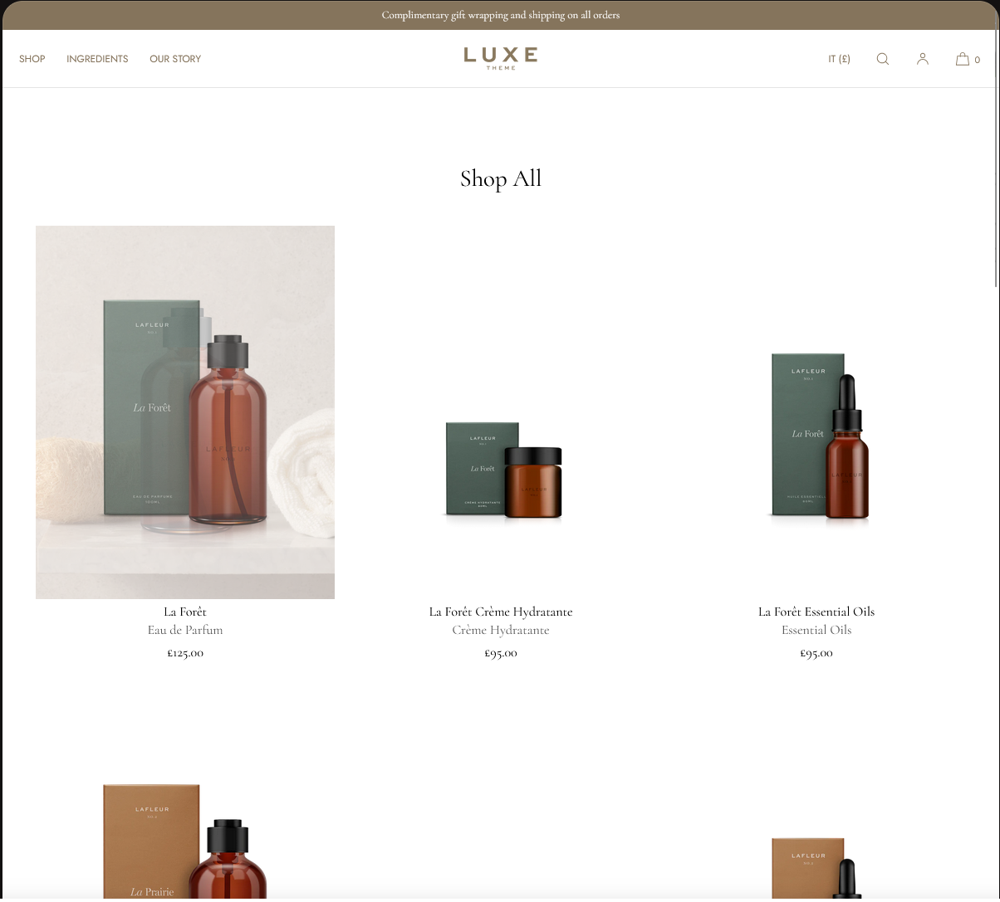

Localisation · Freelance collaboration
Italian Localisation for Shopify's Luxe Theme
An Italian-language localisation project for the Luxe Shopify theme, supported by custom Python tools for extracting and preparing source text.
Project overview
My collaboration with Winter Studio includes:
- Full localisation of Shopify theme "Luxe"
- Product descriptions, UI text, emails, and storefront messaging
- Consistency checks, terminology alignment, and tone matching
- Ongoing support for updates, new features, and content changes
- Fast turnaround and clear communication throughout the project
To streamline my workflow, I developed Python tools that extract all unique text occurrences into a clean, editable format, making localisation faster and more accurate.
Features and concepts
- Localisation of product descriptions, interface text, emails, and storefront messaging.
- Terminology alignment, consistency checks, and tone matching.
- Python-based extraction of unique text into an editable format.
- Ongoing support for theme updates and content changes.
Workflow
- Italian localisation, editing, terminology management, and quality checks.
- Python scripting to support text extraction and localisation workflow.
Libraries and tools
- Python tools for extracting unique text occurrences.
- Python packages, extraction file format, localisation platform, and project scale: [Add details if available].
Skills developed
- Localising user-facing storefront content while maintaining consistent terminology and tone.
- Building small automation tools to reduce repetitive text-preparation work.

View Shopify Theme